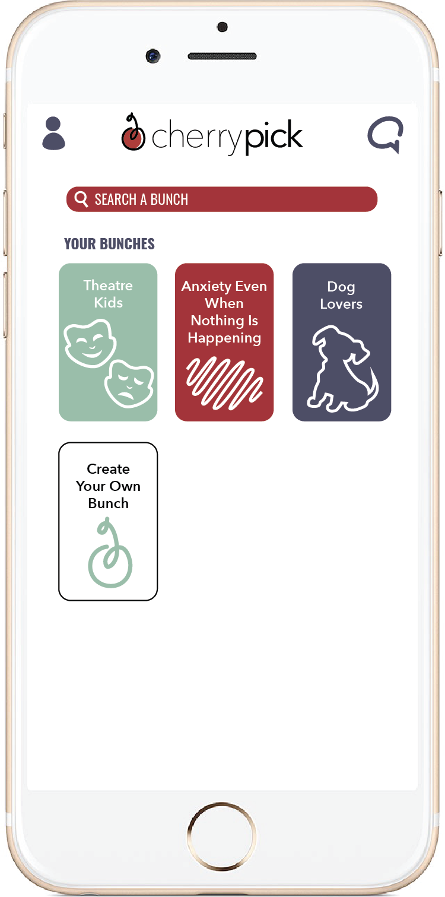
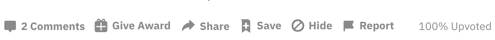

VI. When All Else Fails, Create Your Own Bunch
All of that brought me back, after a short break, to CherryPick with an important question. If my perfect person wasn’t a theatre kid, and he wasn’t a dog lover, and he didn’t have anxiety even when nothing was happening, who was he?
I searched through CherryPick’s bunches, but none sounded quite right for me. There were those that describe me like English majors, reality TV junkies, and overdramatic gals, but I wouldn’t necessarily want to date any of those people. There were also categories I could see myself finding someone in like aspiring artists, people that are really good at asking for what they want, and Costco® members, but who was I kidding? I wasn’t any of those things.
I was beginning to realize that the heart of the problem wasn’t whether or not I could see myself being with a musician or a true-crime fan. If he was the kind of person I wanted to be with, he could have whatever interests he wanted. What the bunches were really doing was leading me to make stereotypical decisions about the groups they described and decide whether or not I would want to date the aspiring comedian or superhero fan I was picturing in my head. In reality, to get to the heart of what I was looking for, I would need to separate guys by what their values were.
None of the bunches I was seeing did that to the extent I wanted. Sure, some tried, like looking for a relationship, great at setting boundaries, and creative types, but they were few and far between. I wanted something more comprehensive that would actually connect people in a more meaningful way.
To do that, I’d have to create my own bunch.
I could do that. Everything I’d read about the app said that was super simple to do, and clearly other people were doing it already. Sure, there was a good chance that I would do this and no one would be interested in it. That would be like facing rejection all over again and would leave me virtually hopeless… No, no, I was going to do it. Rejection wasn’t the end of the world, and this was what it would take to find love, I just knew it.
After scrolling past all my bunches, I clicked the button that would allow me to create my own bunch. All I needed was a title, a description, and an image.
For the title, I decided to start with the values I was looking for. Compassionate, reliable, and joyful humans. It might not have been the most catchy, but it got the job done. Now for the description. “For people looking to find someone with shared values who bring kindness, consistency and happiness to those around them.” Scrolling through the clipart options CherryPick provided, I figured a thought bubble would be the most fitting. And just like that, it was done.
Every review of CherryPick talks about how tough it can be to get a new bunch noticed. It was like trying to go viral online—you can hope good content is enough, but in the end there just isn’t a rhyme or reason to what gets traction. Even if my bunch was good enough to get noticed, it would take some time before that happened. I decided to read some articles and see if there was anything I could do to set my bunch up for success.
Sure enough, with one quick search, tons of resources popped up. I clicked on a link titled, “5 Insanely Actionable Steps To Get Your CherryPick Bunch Noticed!”
1. Use Buzzwords In Your Title
The first step to getting your bunch noticed is making it worth noticing. That means being original, creative, and above all else, relevant. Think about what's hot right now, like TV shows, memes, or hobbies, and then use that to your advantage! The fastest way to get your bunch featured is to get a lot of traction as soon as possible, and buzzwords will do just that.
I reread my title. Sure, it didn’t include, “puppies” or “Tik Tok” or “cryptocurrency” in it, but I still thought it was pretty solid. In my mind, the people I was hoping to meet would be likely to search for these kinds of words.
2. Get Your Friends On Board
Networking isn't just for your job search anymore. Talk to the people you know, friends and acquaintances alike, that are using CherryPick. They can beta test your bunch, suggest things to make it better, and ultimately start helping you grow your community. Your friends can provide judgment free support and might even suggest it to their friends, keeping the chain going.
This step made sense since having active users would be necessary for the bunch to get more traction. The only problem was that I didn’t have any friends on CherryPick. Even if I did, I couldn’t imagine asking people to join. What if they thought the idea was stupid? Or I came across desperate asking them to sign up for my bunch? For now, I decided to skip that one.
3. Promote It To Your Matches
Another way to access CherryPick users is to talk directly to them, right on the app. Hit up the people you met in a similar bunch, the ones you could see being into your community, even the total outliers--you never know who will be interested, and it never hurts to ask. We recommend being positive but not pushy, and keep in mind that not ever bunch is for everyone.
Like the friends suggestion, this one was hard to imagine actually executing. Still, I scrolled through my matches, thinking about who to mention it to. The guys I ghosted after a gross comment? No, thanks. The ones I went on one date with that neither of us had fun at? I think that ship already sailed. How about the guys I was still sort of interested in, but our conversations were fizzling out? Bingo. There were only three guys where this was the case, but I figured this was a great way to try and reignite a dead conversation. I sent them all an identical message about it, trying to seem open-minded and nonchalant.
I resisted the urges to go on about what I wanted it to be or apologize for being so forward about it. This message left enough room for them to respond if they had thoughts about it.
4. Create Buzz About It
Now that you've got friends and matches swiping in your bunch, it's time to get the public in on it. CherryPick has tons of community platforms for promoting bunches like Facebook groups, Reddit threads, and discussion boards. Don't be afraid to post about it a ton, and include why you think you're group is great. Posting online is a great way to get an even more diverse group of people in your bunch.
The article specifically recommended posting online to Facebook groups, Reddit threads, and CherryPick’s discussion boards. This meant I had to whip out marketing skills I wasn’t even sure I had, but I could give it a shot.
r/CherryPick · Posted by u/AmazingMayes 1 hour ago
A Value Based Bunch on CherryPick
Hey CherryPickers! I wanted to highlight a new bunch I created: Compassionate, reliable, and joyful humans. It’s going to be different from other CP bunches because you can interact with someone who has the same values as you, not just one shared interest. I’m hoping it’ll make finding like-minded people easier. I encourage anyone who brings kindness, consistency and happiness to those around them to join.
5. Get Feedback
Finally, keep an open mind. Even if you're sure your bunch is unstoppable, listen to what people have to say about it. Talk with the people you match with in the bunch, and use what you hear in the next bunch you create. Don't be afraid to try new things, take or leave any advice you get, and keep up with what bunches are hot. In the end, as long as you're proud of what you're doing, you made an awesome bunch!
This suggestion seemed longer term. It was hard to get feedback on something no one was seeing. I refreshed the page, and my thoughts were confirmed: there was no one new in the bunch. Even if people did join, I didn’t think I was going to want to chat with people about why they joined and use that info to get more people in the bunch.
In the end, I went with two out of five suggestions the article gave and hoped that would be enough to get compassionate, reliable, and joyful humans off the ground. Until then, all I could do was wait.
Next: Be Patient